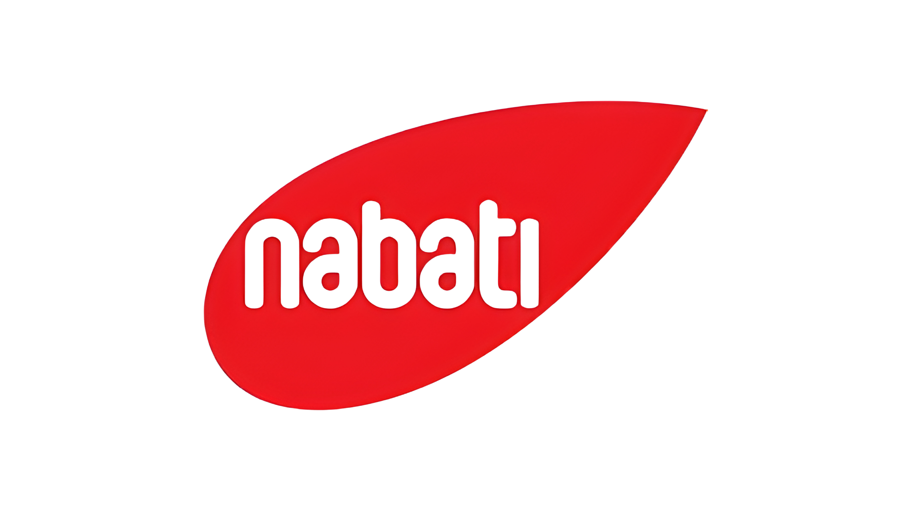

Professional Experience

PT Kaldu Sari Nabati Indonesia
Data Analyst
Bandung | November 2025 to Present
- Spearheaded Unified Reporting Standardization by implementing the Nabati DNA System generating scalable JSON outputs that reduced development cycles by 30% and user feedback by 50%.
- Engineered an end to end Market Knowledge pipeline using AWS Redshift and DBT delivering data 1.5x faster than standard benchmarks.
- Completed comprehensive effectiveness analysis for the Full Self Order pilot guiding full scale rollout decisions across national outlets.
- Delivered business critical projects focusing on daily sales monitoring and manufacturing asset management to optimize resource allocation.

Bank Syariah Indonesia
Business Intelligence Analyst
Jakarta | February 2024 to October 2025
- Delivered over 8 business critical dashboards enhancing performance monitoring across retail banking gold MSMEs and automotive financing.
- Leveraged Big Data ecosystem Hadoop Impala Hue to extract and process massive transaction datasets improving data driven actions.
- Revolutionized performance monitoring across 1000 branches by developing a centralized dashboard closing critical visibility gaps.
- Developed the first Gold Business Bullion Dashboard from scratch enabling data driven monitoring of priority executive projects.
- Led AI initiative content creation producing key video campaigns showcased to 18000 employees.

Dinas Pendidikan Provinsi Jawa Barat
Full Stack Developer
Bandung | June 2022 to February 2024
- Developed Sigesit Juara a comprehensive province wide platform for 4500 schools to analyze datasets regarding teacher distribution.
- Formulated data assessment frameworks to evaluate and rank schools identifying high priority institutions for targeted government assistance.
- Engineered a Go based automation tool to extract and structure data removing manual input and improving accuracy.
- Awarded 1st and 2nd Place by BP2D West Java for producing impactful video campaigns promoting bullying prevention student safety and the provincial Jabar Juara initiative.